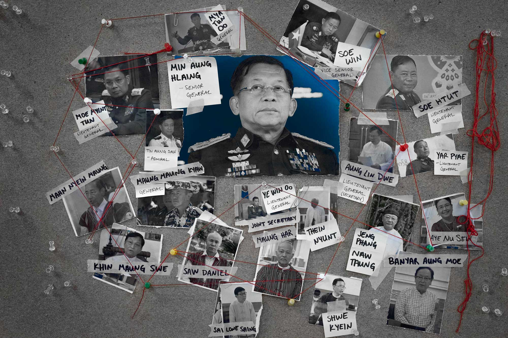
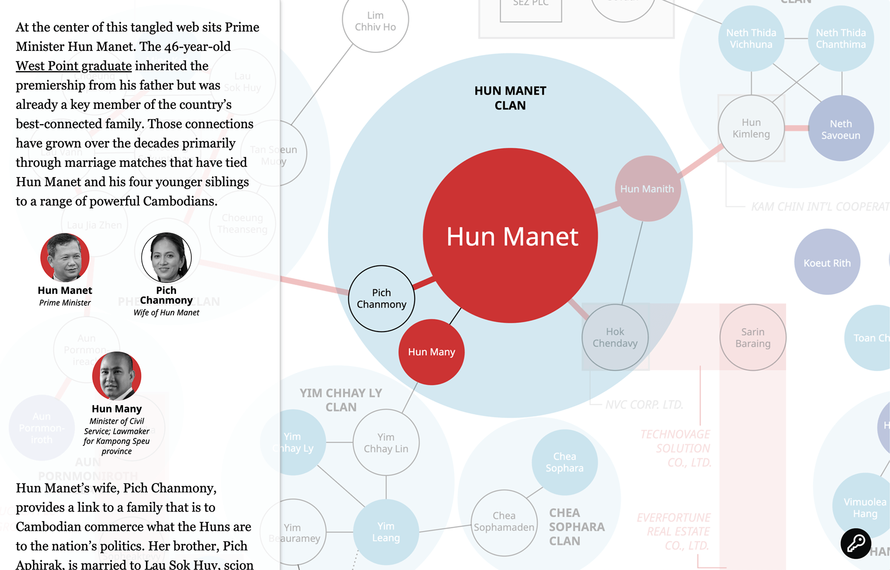
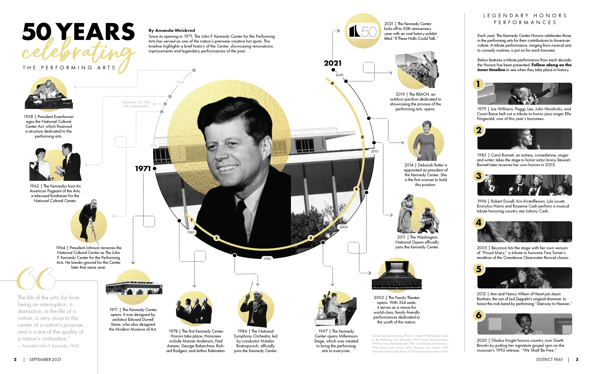
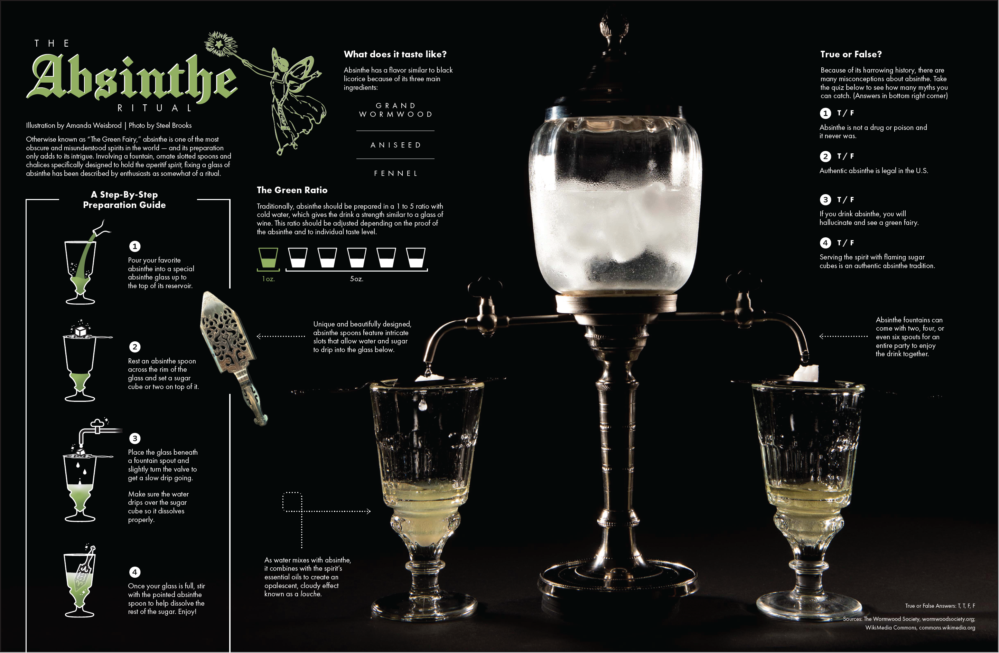
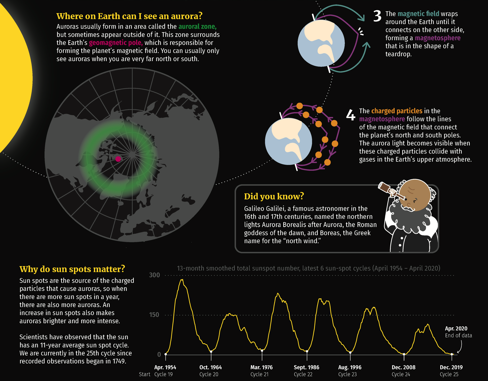

Award-winning Projects
Under the Gun in Myanmar
⭐ 2024 Edward R. Murrow Award (digital, national network radio)
Two years after the coup in Myanmar, this data-driven project explores the effects of the armed conflict on the country and its people. The conflict has displaced over a million people and resulted in thousands of deaths.
Cambodia's New Cabinet is Steeped in Nepotism
⭐ 2024 One World Media Awards (longlisted, innovative storytelling)
Hun Manet, the prime minister of Cambodia and son of long-time leader Hun Sen, has appointed a cabinet filled with family members and close associates, raising concerns about nepotism and transparency in the country's governance.
Memories of Home

⭐ 2023 Telly Awards (Silver, 2D-Animation)
The Rohingya refugee crisis is one of the most pressing humanitarian issues of our time. This animated video project seeks to humanize the plight of Rohingya refugees by sharing their memories of what life was like before their displacement.
Fifty Years Celebrating the Performing Arts
⭐ 2022 Society for News Design Student Design Contest (First Place, Infographics Category)
The Kennedy Center in Washington, D.C. has served as a cultural staple for more than 50 years. This infographic, produced for DC Fray magazine, highlights some of the center's most iconic performances and events over the decades.
The Absinthe Ritual
⭐ 2022 Society for News Design Student Design Contest (Honorable Mention, Alternative Story Format Category)
Despite popular belief, absinthe is not a hallucinogenic drug. This infographic explores the history and myths surrounding this intriguing spirit, and shows a step-by-step guide on how to properly prepare it using traditional methods.
Dancing Lights
⭐ 2021 Society for News Design Student Design Contest (Third Place, Infographics Category)
Ever wondered how the Northern Lights are formed? This mega-graphic, produced for an infographics course at Ohio University, explores the science behind the beautiful phenomenon in a style suitable for a children's publication.